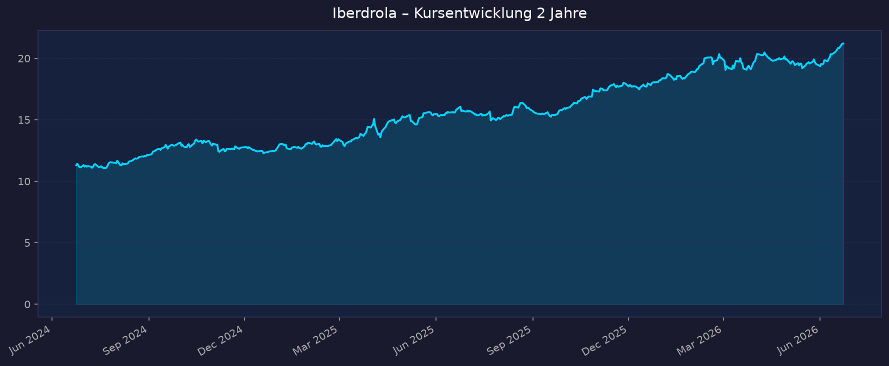
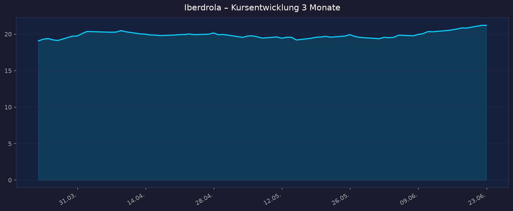

Alle Kurse in EUR. Börsenplatz: BME Madrid.
📈 1. Kursentwicklung
Aktueller Kurs: 21,20 EUR | Veränderung heute: +0,05 % (Vortagesschluss 21,19 EUR)
Chart – 2 Jahre

Chart – 3 Monate

| Zeitraum | Kurs Start | Kurs Ende | Veränderung |
|---|---|---|---|
| 2 Jahre | 11,31 EUR | 21,20 EUR | +87,4 % |
| 3 Monate | 19,07 EUR | 21,20 EUR | +11,2 % |
| 52-Wochen-Hoch | — | 21,43 EUR | — |
| 52-Wochen-Tief | — | 15,10 EUR | — |
Interaktiver Chart: https://www.tradingview.com/symbols/BME-IBE/
Einordnung: Iberdrola notiert dicht unter dem 52-Wochen-Hoch und hat sich in zwei Jahren nahezu verdoppelt – starkes defensives Momentum für einen Versorgerwert. Der 3-Monats-Trend ist klar aufwärts gerichtet.
💹 2. KGV-Entwicklung (Kurs-Gewinn-Verhältnis)
Aktuelles KGV (trailing): 26,5 | Forward-KGV: ~19,8
| Zeitraum | KGV | Einordnung |
|---|---|---|
| Aktuell (trailing) | 26,5 | über historischem Median, ambitioniert |
| Forward (2026e) | ~19,8 | im Rahmen der These (~19) |
| Ende 2025 | ~21,9 | nahe 5-Jahres-Hoch |
| Ende 2024 | ~12,7 | 5-Jahres-Tief |
| Ende 2023 | ~17,1 | — |
| 10-Jahres-Median | ~16,3 | Spanne 9,2 – 24,1 |
Bewertung: Das trailing-KGV von ~26,5 liegt deutlich über dem 10-Jahres-Median (~16,3) und signalisiert eine ambitionierte Bewertung. Das Forward-KGV von ~19,8 relativiert dies durch das erwartete Gewinnwachstum, bleibt aber für einen regulierten Versorger am oberen Rand. Die Höherbewertung spiegelt die Qualität des Netz-Cashflows und die angehobene Guidance wider.
💰 3. Sales Multiple (Kurs-Umsatz-Verhältnis / P/S)
Aktuelles P/S-Verhältnis: 3,21
| Zeitraum | P/S Ratio | Einordnung |
|---|---|---|
| Aktuell | 3,21 | Marktkap. ~139,7 Mrd. EUR / Umsatz ~45,5 Mrd. EUR |
| vor 3 Monaten | ~2,9 (geschätzt aus Kursanstieg) | gestiegen |
| vor 12 Monaten | nicht verfügbar (historische Reihe nicht belastbar) | — |
| vor 24 Monaten | nicht verfügbar | — |
Trend: Steigend – getrieben vom Kursanstieg der letzten Quartale bei nahezu stabilem Umsatz. Für ein netzlastiges Versorgungsunternehmen mit hohem regulierten Anteil ist ein P/S um 3 nicht ungewöhnlich, da die Margenqualität des Netzgeschäfts höher ist als im reinen Stromhandel.
📊 4. Handelsvolumen (Trading Volume)
| Zeitraum | Ø Tagesvolumen | Auffälligkeiten |
|---|---|---|
| 10-Tage-Durchschnitt | ~13,77 Mio. Aktien | leicht erhöht |
| 3-Monats-Durchschnitt (avg) | ~11,78 Mio. Aktien | Normalniveau |
| 2-Jahres-Durchschnitt | nicht verfügbar (yfinance liefert keine belastbare 2J-Reihe) | — |
Volumentrend: Das jüngste 10-Tage-Volumen liegt über dem 3-Monats-Schnitt – Hinweis auf erhöhtes Interesse nahe dem 52-Wochen-Hoch. Insgesamt sehr liquider Large-Cap-Wert (Marktkap. ~140 Mrd. EUR).
🏦 5. Insider Trades (letzte 2 Jahre)
| Datum | Name | Funktion | Kauf/Verkauf | Anzahl Aktien | Wert (EUR) |
|---|---|---|---|---|---|
| nicht verfügbar | — | — | — | — | — |
3-Monats-Überblick: nicht verfügbar 2-Jahres-Überblick: nicht verfügbar
Hinweis: Iberdrola ist eine spanische Aktie. Direktoren-Meldungen laufen über die CNMV (Comisión Nacional del Mercado de Valores), nicht über SEC/OpenInsider. Eine belastbare strukturierte Insider-Trade-Liste war im Rahmen dieser Recherche nicht abrufbar. Relevante gemeldete Kapitalmaßnahmen (keine klassischen Insidertrades): Übernahme der PREVI-Beteiligung an Neoenergia (Okt. 2025), Übernahmeangebot für 16,2 % von Neoenergia (Nov. 2025, Abschluss Apr. 2026), Verkauf des Mexiko-Geschäfts mit 2.600 MW (Apr. 2026).
Quelle: CNMV (best effort)
🩳 6. Short-Positionen
Aktuelle Short Quote: nicht verfügbar
| Zeitraum | Short Interest | Veränderung |
|---|---|---|
| Aktuell | nicht verfügbar | — |
Einschätzung: Für spanische Large-Caps werden meldepflichtige Netto-Leerverkaufspositionen (>0,5 %) bei der CNMV geführt; eine aktuelle Quote war im Rahmen dieser Recherche nicht belastbar abrufbar. Erfahrungsgemäß ist die Short-Quote bei defensiven, dividendenstarken EU-Versorgern wie Iberdrola niedrig (gering volatiles, regulatorisch stabiles Geschäftsmodell). Als „nicht verfügbar" zu werten.
🗞️ 7. Aktuelle Nachrichten
| Datum | Quelle | Nachricht | Relevanz |
|---|---|---|---|
| Apr. 2026 | Investing.com | Q1 2026: bereinigter Nettogewinn +11 % auf 1.865 Mio. EUR, Guidance auf >8 % angehoben | Hoch |
| Apr. 2026 | Morningstar | „Guidance Raised After Strong Earnings" – Aktie als reich bewertet eingestuft | Hoch |
| Apr. 2026 | Iberdrola/CNMV | Abschluss Verkauf Mexiko-Geschäft (2.600 MW) | Hoch |
| Apr. 2026 | Iberdrola/CNMV | Abschluss Übernahmeangebot Neoenergia (Brasilien, Richtung 100 %) | Hoch |
| Feb. 2026 | Iberdrola/ara.cat | FY2025: Rekord-Nettogewinn 6,285 Mrd. EUR (+12 %), Investitionen 14,46 Mrd. EUR | Hoch |
| Feb. 2026 | Investing.com | FY2025-Folien: Netze treiben +12 % Gewinn, regulierte Asset-Basis +12 % auf 51 Mrd. EUR | Hoch |
| Jan. 2026 | Iberdrola | Zwischendividende 2025: 0,253 EUR/Aktie (+8,2 %) unter Flexible-Remuneration-Programm | Mittel |
| 2026 | ad-hoc-news | Positive Analystenprognosen treiben Kurs Richtung 52-Wochen-Hoch | Mittel |
| Feb. 2026 | Engie/Enlit | Wettbewerber ENGIE kauft UK Power Networks – Verschärfung im Netzgeschäft UK | Mittel |
| 2026 | Iberdrola | Strategieplan 2025–2028: 18 Mrd. EUR EBITDA-Ziel 2028, ~20 Mrd. EUR Dividenden 2025–2028 | Mittel |
Sentiment: Überwiegend positiv – Rekordgewinn, angehobene Guidance und Portfolio-Bereinigung (Mexiko-Verkauf, Neoenergia-Aufstockung) stützen. Dämpfend: Mehrere Analysten sehen die Aktie nach der Rallye als „reich bewertet" (Kursziele teils unter aktuellem Niveau).
📋 8. Letzte 3 Quartalsberichte
Q1 2026 (Berichtsstichtag April 2026)
| Kennzahl | Ist | Erwartung | Abweichung |
|---|---|---|---|
| Umsatz (Revenue) | ~12,02 Mrd. EUR | nicht verfügbar | –0,3 % ggü. Vorjahr (FX-belastet) |
| Nettogewinn (bereinigt) | 1.865 Mio. EUR | — | +11 % ggü. Vorjahr |
| EBITDA (bereinigt) | ~4,1 Mrd. EUR | — | +2,4 % ggü. Vorjahr |
| EPS (Feb.-Datenpunkt, USD) | 0,1719 $ | 0,1677 $ | Beat |
Guidance: Prognose für bereinigtes Nettogewinnwachstum 2026 von ~6 % auf >8 % angehoben; Netzausbau in A-bewerteten Ländern (USA +21,5 %, UK +32 % EBITDA in Lokalwährung) als Treiber. Kursreaktion: Verhalten positiv (+0,25 % vorbörslich) – gute Zahlen waren weitgehend eingepreist.
Q4 / Gesamtjahr 2025 (Berichtsstichtag 25. Februar 2026)
| Kennzahl | Ist | Erwartung | Abweichung |
|---|---|---|---|
| Umsatz (Revenue) FY | 45,55 Mrd. EUR | — | +1,8 % ggü. 2024 |
| Nettogewinn (gemeldet) FY | 6.285 Mio. EUR | — | +12 % ggü. 2024 (5.612 Mio.) |
| EBITDA (gemeldet) FY | 16.592 Mio. EUR | — | leicht unter 2024; bereinigt 15.684 Mio. (Netze +21 %) |
| Regulierte Asset-Basis | 51 Mrd. EUR | — | +12 % |
Guidance: Dividendenvorschlag 0,68 EUR/Aktie (+6,8 %); Investitionen 14,46 Mrd. EUR; Strategieplan-Ziele bestätigt (>6,6 Mrd. EUR Nettogewinn 2026, >7,6 Mrd. EUR 2028). Kursreaktion: Q4-Earnings (EPS 0,1719 $ vs. 0,1677 $ erwartet) – EPS-Beat, aber Umsatz unter Erwartung; Reaktion gemischt/moderat.
Q3 / Neunmonatsbericht 2025 (Berichtsstichtag 28. Oktober 2025)
| Kennzahl | Ist | Erwartung | Abweichung |
|---|---|---|---|
| Umsatz (Revenue) 9M | nicht verfügbar | — | — |
| Nettogewinn (gemeldet) 9M | 5.307 Mio. EUR | — | bereinigt +17 % (5.116 Mio.) |
| EBITDA (gemeldet) 9M | 12.438 Mio. EUR | — | Netze +26 % auf 6.128 Mio. EUR |
| Investitionen 9M | 9,0 Mrd. EUR | — | Rekord |
Guidance: 2025-Ausblick auf 6,6 Mrd. EUR bereinigten Nettogewinn angehoben; Rekord-Zwischendividende 0,25 EUR/Aktie (+8,2 %). Schwäche im Segment Renewables & Customers (EBITDA –11 % ohne Veräußerungsgewinne). Kursreaktion: Positiv aufgenommen (Gewinnsprung +17 %, Guidance-Anhebung).
🌍 9. Marktkontext & Wettbewerb
Markt / Branche: EU-Versorger / Stromnetze & Erneuerbare. Integrierte Versorger planen 2026 ~114 Mrd. EUR Infrastruktur-Investitionen (+4 % ggü. 2025). Iberdrola ist Europas größter Versorger nach Marktkapitalisierung (>140 Mrd. EUR) und weltweit Nr. 2 hinter NextEra.
| Wettbewerber | Stärke | Schwäche |
|---|---|---|
| NextEra Energy (USA) | Weltgrößter Versorger nach Marktkap., riesige Erneuerbaren-Pipeline | Primär US-fokussiert, kein EU-Netzgeschäft |
| Enel (Italien) | Vergleichbare Grids-First-Strategie, 53 Mrd. EUR Capex (>26 Mrd. Netze), Smart-Meter-Vorsprung | Höhere EM-/Italien-Exponierung |
| E.ON (Deutschland) | Reiner Netzbetreiber, defensiv, hoher Capex in DE-Netze | Geringeres Erneuerbaren-Standbein |
| Engie (Frankreich) | Kauf UK Power Networks (2026) → UK 2. Heimatmarkt, breites Portfolio | Komplexere Struktur, Gas-Exponierung |
Branchentrends: (1) „Grids-First" – Verschiebung von Investitionen in regulierte Netze mit stabilem, planbarem Cashflow; Iberdrolas Strategie zahlt sich früh aus. (2) Erneuerbaren-Ausbau bei zugleich gedrückten Großhandels-Strompreisen (Spanien/UK) belastet das Power-&-Customers-Segment. (3) Konsolidierung im Netzgeschäft (Engie kauft UK Power Networks – direkter Wettbewerb in Iberdrolas UK-Kernmarkt).
Marktposition: Führend. Iberdrola ist seit drei Jahren in Folge Marktführer bei langfristigen Erneuerbaren-Abnahmeverträgen in Europa, mit ~55 % EBITDA-Beitrag aus regulierten Netzen (Ziel 2028). Die Konzentration auf A-bewertete Länder (USA, UK) liefert defensiven, regulatorisch abgesicherten Cashflow.
Risiken aus dem Marktumfeld: (1) Zinsrisiko – kapitalintensives, hoch verschuldetes Geschäftsmodell reagiert sensibel auf Zinsänderungen (Bewertung & Finanzierungskosten). (2) Regulierungsrisiko – Erträge der Netze hängen von regulatorischen Rahmen (RAB, erlaubte Renditen) ab; Änderungen treffen Kerncashflow. (3) Strompreis-/Margendruck im nicht-regulierten Power-&-Customers-Geschäft. (4) FX-Risiko (USD/GBP/BRL) – Q1 2026 zeigte spürbaren Währungseffekt auf Umsatz. (5) Bewertungsrisiko – nach starker Rallye sehen mehrere Analysten begrenztes Aufwärtspotenzial (Konsens-Kursziele teils unter 21 EUR).
📝 Gesamteinschätzung
Stärken:
- Größter EU-Versorger, weltweit Nr. 2 – Skalen- und Finanzierungsvorteile
- Hoher Anteil regulierter Netze (defensiver, planbarer Cashflow), Asset-Basis +12 % auf 51 Mrd. EUR
- Rekord-Nettogewinn FY2025 (6,285 Mrd. EUR, +12 %), Q1 2026 +11 %, Guidance auf >8 % angehoben
- Klarer Wachstumspfad (Strategieplan 18 Mrd. EUR EBITDA bis 2028) und attraktive Dividendenpolitik (~20 Mrd. EUR 2025–2028, Floor 0,64 EUR)
- Marktführer bei Erneuerbaren-PPAs in Europa, Fokus auf A-bewertete Länder
Risiken:
- Ambitionierte Bewertung (trailing-KGV ~26,5 über 10J-Median ~16,3); Konsens-Kursziele teils unter aktuellem Kurs
- Zins- und Regulierungssensitivität des kapitalintensiven Modells
- Margendruck und Gewinnrückgang im Power-&-Customers-Segment
- FX-Belastung (USD/GBP/BRL) drückte Q1-Umsatz
- Verschärfter Wettbewerb im UK-Netzgeschäft (Engie/UK Power Networks)
Fazit: Iberdrola ist ein qualitativ hochwertiger, defensiver EU-Versorger mit überdurchschnittlichem, regulierungsgetriebenem Gewinnwachstum und solider Dividende. Operativ überzeugen Rekordgewinn, angehobene Guidance und der Netzfokus. Bewertungsseitig ist die Aktie nach der starken Rallye nahe dem 52-Wochen-Hoch jedoch nicht mehr günstig – das Chance-Risiko-Profil wirkt eher ausgewogen als ausgeprägt unterbewertet.
🎯 Ranking-Einordnung
Bewertung nach 5 Kriterien (Punkte 1–10)
| Kriterium | Gewicht | Punkte (1–10) | Begründung |
|---|---|---|---|
| Wachstum (Gewinn/Guidance) | 25 % | 7 | FY +12 %, Q1 +11 %, Guidance >8 % – stark für einen Versorger, aber kein Hyper-Growth |
| Bewertung (KGV/P/S) | 25 % | 5 | Trailing-KGV ~26,5 über 10J-Median; Forward ~19,8 fair, Aufwärts begrenzt |
| Geschäftsqualität/Defensive | 20 % | 9 | Regulierte Netze, planbarer Cashflow, A-Länder-Fokus – sehr defensiv |
| Dividende/Shareholder Return | 15 % | 8 | ~3,6 % Rendite, +6,8 % Wachstum, Floor 0,64 EUR, ~20 Mrd. EUR bis 2028 |
| Momentum/Sentiment | 15 % | 8 | +87 % in 2J, nahe 52W-Hoch, positives Sentiment nach Guidance-Anhebung |
Gewichteter Gesamt-Score: 0,25×7 + 0,25×5 + 0,20×9 + 0,15×8 + 0,15×8 = 1,75 + 1,25 + 1,80 + 1,20 + 1,20 = 7,2 / 10
Szenarien 2031 (5-Jahres-Horizont)
Basis: aktueller Kurs 21,20 EUR. Defensiver Versorger – moderate, aber planbare Bandbreite.
| Szenario | Annahmen | Kursziel 2031 | Potenzial |
|---|---|---|---|
| Bär | Zinsen hoch, Regulierungsdruck, Multiple-Kontraktion, schwaches Power-Segment | 18,00 EUR | –15 % |
| Base | Plan-Erfüllung (EBITDA 18 Mrd. 2028, danach moderates Wachstum), KGV-Normalisierung, stabile Dividende | 28,00 EUR | +32 % |
| Bull | Übererfüllung Netzausbau, Zinssenkungen heben Bewertung, Erneuerbaren-Boom, Multiple-Expansion | 34,00 EUR | +60 % |
Hinweis: Kursziele ohne Dividenden (Gesamtrendite läge inkl. ~3,6 % p.a. Dividende deutlich höher).
Datenquellen: Yahoo Finance · yfinance · Macrotrends · Investing.com · Morningstar · Iberdrola IR · CNMV · Renewables Now · ad-hoc-news · ING THINK · Enlit World Stand 2026-06-23. Kurse in EUR. Keine Anlageberatung – rein informative Auswertung öffentlicher Daten.